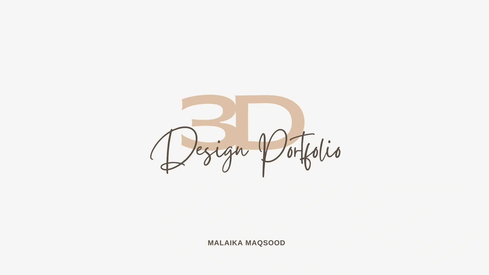
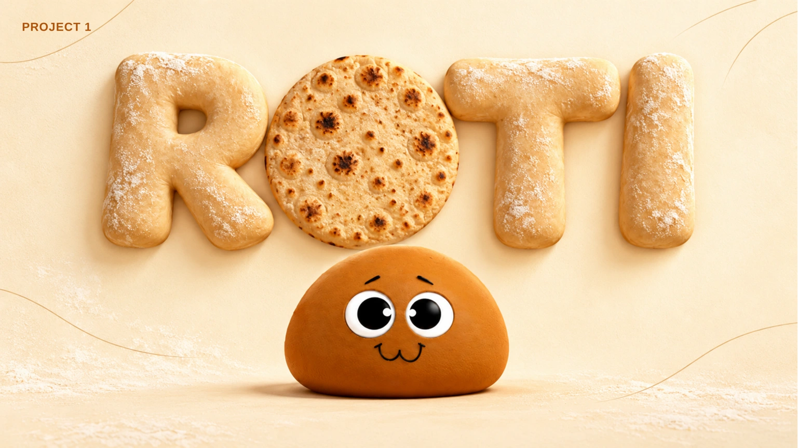
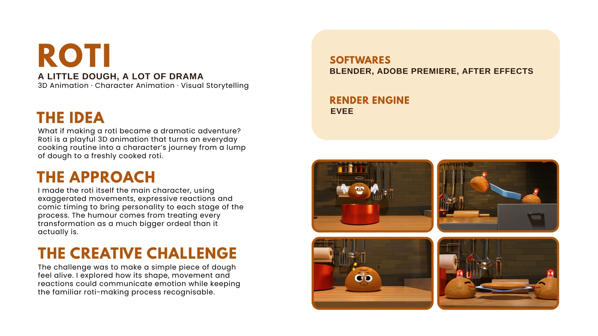
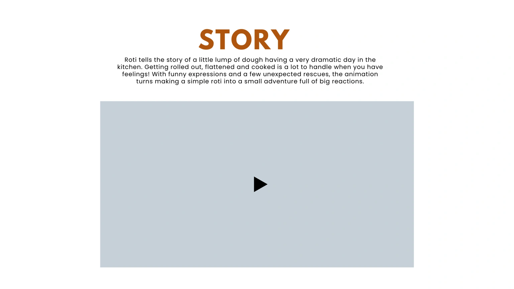
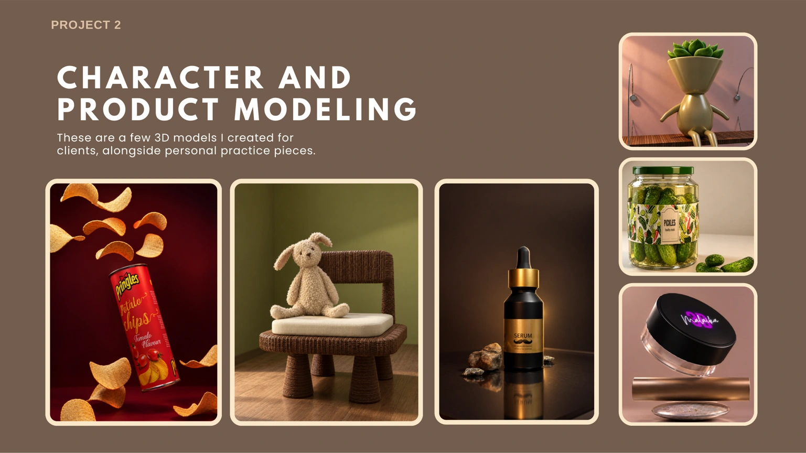
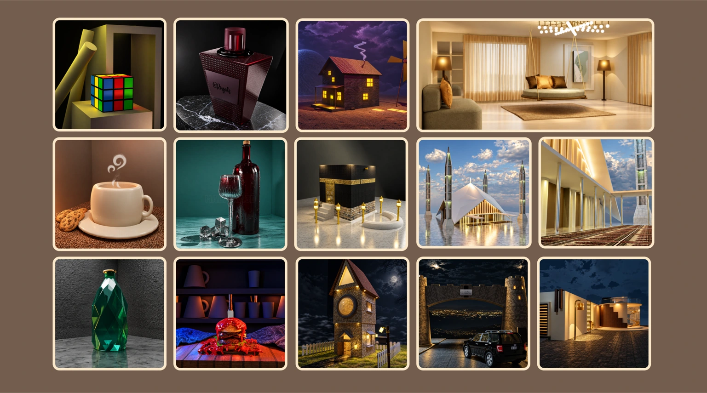

3D Design Portfolio MALAIKA MAQSOOD

PROJECT 1

3D Animation · Character Animation · Visual Storytelling What if making a roti became a dramatic adventure? Roti is a playful 3D animation that turns an everyday cooking routine into a character’s journey from a lump of dough to a freshly cooked roti. I made the roti itself the main character, using exaggerated movements, expressive reactions and comic timing to bring personality to each stage of the process. The humour comes from treating every transformation as a much bigger ordeal than it actually is. The challenge was to make a simple piece of dough feel alive. I explored how its shape, movement and reactions could communicate emotion while keeping the familiar roti-making process recognisable. ROTI A LITTLE DOUGH, A LOT OF DRAMA BLENDER, ADOBE PREMIERE, AFTER EFFECTS EVEE THE IDEA SOFTWARES RENDER ENGINE THE APPROACH THE CREATIVE CHALLENGE

STORY Roti tells the story of a little lump of dough having a very dramatic day in the kitchen. Getting rolled out, flattened and cooked is a lot to handle when you have feelings! With funny expressions and a few unexpected rescues, the animation turns making a simple roti into a small adventure full of big reactions.

C H A R AC T E R A N D P R O D UC T M O D E L I N G These are a few 3D models I created for clients, alongside personal practice pieces. PROJECT 2

